CS180 · Intro to Computer Vision and Computational Photography · Project 3
Flow Matching and Diffusion Models
Part A: The Power of Flow Models
Part A uses a pretrained text-to-image flow model, PixNerd (MCG-NJU/PixNerd-XXL-P16-T2I), as a black box that predicts a velocity. Convention: xt = (1 − t)·ε + t·x1, so t = 0 is pure noise and t = 1 is the clean image, and the straight-line velocity from noise to image is x1 − ε. Images live in [−1, 1], the seed is 180, and every sampler uses Euler steps of size h = 0.02.
1.1 Noising an image
interpolate(image, noise, t) returns (1 − t)ε + t·image. Note this is a blend, not “image + noise”: the image is scaled by t as well, so at t = 0.25 the picture is mostly gone. The three columns are t = 0.25, 0.5 and 0.75 for my own photo (my cat, Skippy).
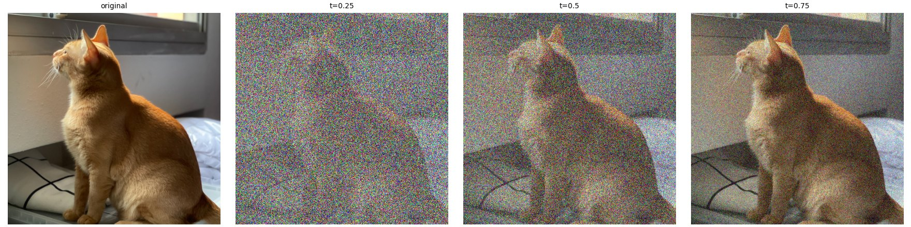
1.2 Gaussian blur as a “denoiser” baseline
Before using the model I tried the classical baseline: rescale the noisy image by 1/t so the signal is back at its original magnitude (the noise then has std (1 − t)/t), and apply a Gaussian blur. Blurring does suppress the colourful speckle but it destroys the detail along with it. At the higher noise levels the cat is only a smear.
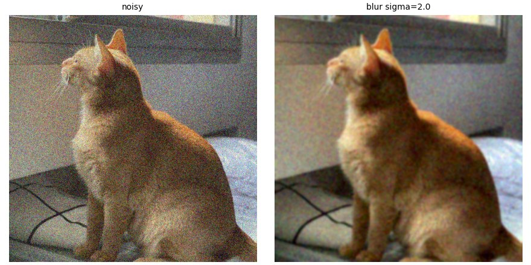
1.3 One-step denoising
The model predicts a velocity v. Moving along a straight line from xt to t = 1 is x̂1 = xt + (1 − t)·v. The velocity is added (extrapolated), not subtracted, because it points from noise toward the image.
Code: one-step denoise and interpolation
def interpolate(image, noise, t):
return (1 - t) * noise + t * image
def one_step_denoise(x, t, condition, predict_velocity):
v = predict_velocity(x, t, condition)
return x + (1 - t) * v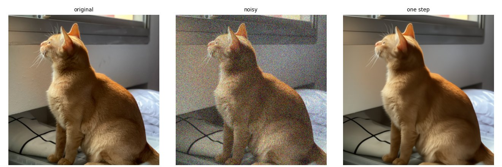
From t = 0.5 and 0.75 one step already gives a clean-looking cat. From t = 0.25 a single step produces the right overall colours and shape but a smooth, slightly “painted” result: with so little signal left the model has to guess the fine texture, and one straight-line jump can only produce its average guess (the same reason blur-like averages show up in Part B).
1.4 Looking at the velocity
velocity_diagnostics returns the model’s update (1 − t)v̂, the ground-truth update (1 − t)(x1 − ε), and a per-pixel RMS error averaged over RGB only. The predicted and true updates look almost the same, and the error is concentrated on edges and fine texture (Skippy’s outline, whiskers, the bedspread pattern) while flat regions are nearly perfect.
Code: velocity diagnostics
v_pred = predict_velocity(x_t, t, condition)
v_gt = clean_image - epsilon # x_1 - epsilon
predicted_update = (1 - t) * v_pred
ground_truth_update = (1 - t) * v_gt # equals x_1 - x_t
error_map = ((predicted_update - ground_truth_update) ** 2).mean(dim=1).sqrt()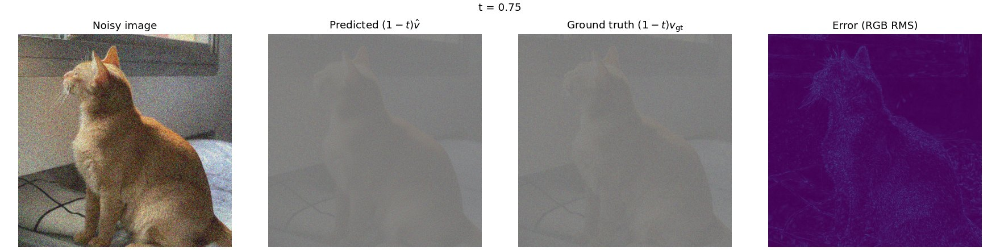
1.5 Euler sampling
euler_sample integrates the flow: xt+h = xt + h·v(xt, t), re-querying the velocity at every step (so the path curves with the model’s predictions instead of one straight jump). I compute time as tstart + i·h instead of repeatedly adding h so floating-point error cannot push t outside [0, 1], and shorten the last step so the final state is exactly t = 1. A small tolerance (1e-9) in the step count stops 0.93 + 0.02×k style arithmetic from creating a spurious extra step. The sampler is wrapped in torch.inference_mode() and works in float32.
Code: Euler sampler
@torch.inference_mode()
def euler_sample(x_start, t_start, step_size, velocity):
x = x_start.to(torch.float32)
n_steps = max(0, math.ceil((1.0 - t_start) / step_size - 1e-9))
states = [(float(t_start), x)]
for i in range(n_steps):
t = t_start + i * step_size # time at the START of this step
h = min(step_size, 1.0 - t) # shorten the final step if needed
x = x + h * velocity(x, t)
is_last = i == n_steps - 1
if is_last or (i + 1) % 5 == 0:
states.append((1.0 if is_last else t_start + (i + 1) * step_size, x))
return x, states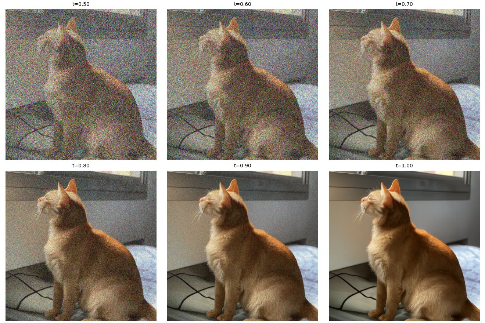
The table compares the three reconstructions of the cat from t = 0.25 against the original (pixel MSE in [−1, 1] units, from my run):
| Method | MSE |
|---|---|
| Gaussian blur | 0.0123 |
| One step | 0.0039 |
| Euler (50 steps) | 0.0048 |
Both flow-model results are far better than the blur baseline. One step has a slightly lower MSE than Euler, which is not a sign it looks better: MSE rewards the smooth “average guess” the one-step jump produces, while Euler commits to sharper detail that may differ from the original at the pixel level. Visually Euler is the crisper image (see the comparison below).
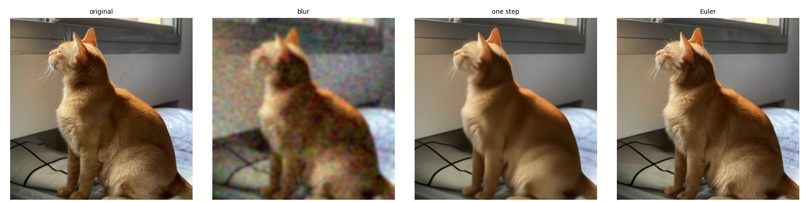
1.6 Unit tests
The notebook’s checks all pass: Euler takes exactly 50 steps from t = 0 and 25 from t = 0.5, the last step is shortened correctly, and the final time is exactly 1.
2: Classifier-free guidance
Unconditional and conditional velocity predictions are combined as v = vc + w·(vc − vu) (the empty prompt gives vu). With w = 0 this is plain conditional sampling; I use w = 7. Below are five samples from pure noise, seeds 180–184, first without guidance and then with w = 7. Guidance pushes the samples toward clean, well-composed portraits, while without it several samples show distorted faces and skin.
Code: CFG velocity
def cfg_velocity(x, t, condition, w, predict_velocity, null_condition=''):
v_c = predict_velocity(x, t, condition)
v_u = predict_velocity(x, t, null_condition)
return v_c + w * (v_c - v_u)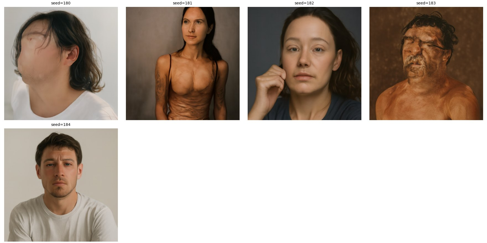
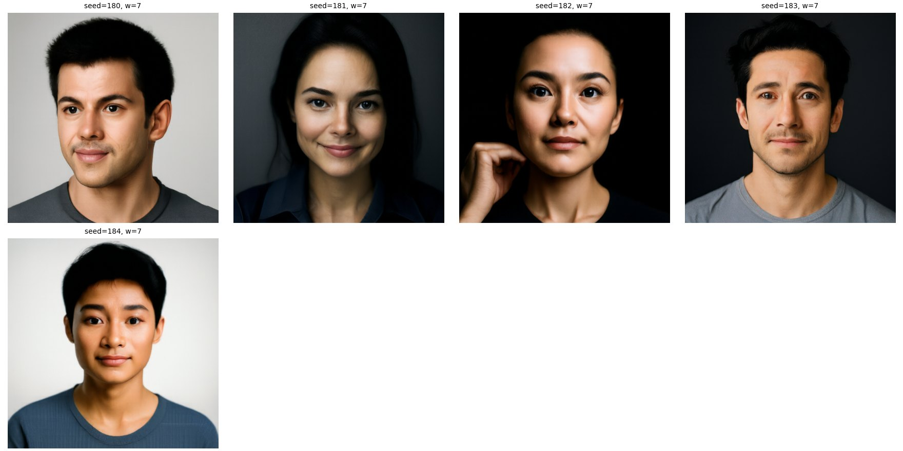
3: Image-to-image translation and visual illusions
3.1 SDEdit-style editing
edit noises an image to tstart and denoises it back with CFG. Small tstart means more noise, so the output follows the prompt more and the original less. Each panel below goes through tstart = 0.02, 0.04, 0.06, 0.10, 0.14, 0.25, 0.50. These panels show the plain edit (no extra prompt text) on the Campanile, my own photos (Skippy and a selfie), a web image (Geronimo Stilton) and two drawings (a pufferfish and a rainbow).
Here, a generic prompt, "a high quality photo" is used.
Code: edit
def edit(image, noise, t_start, condition, predict_velocity, w=7, step_size=0.02):
x_t = interpolate(image, noise, t_start)
velocity = lambda x, t: cfg_velocity(x, t, condition, w, predict_velocity)
edited, _ = euler_sample(x_t, t_start, step_size, velocity)
return edited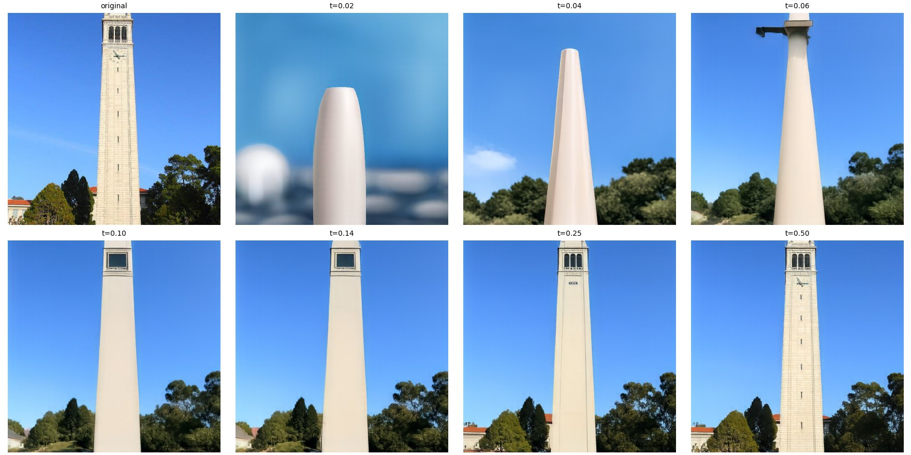
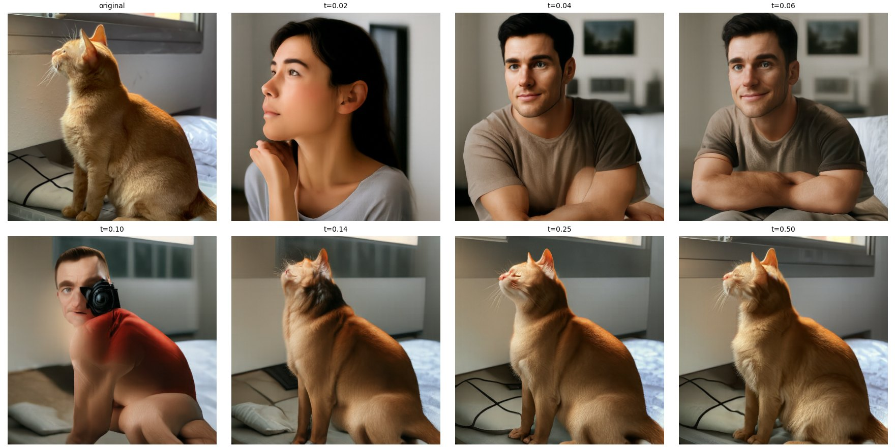
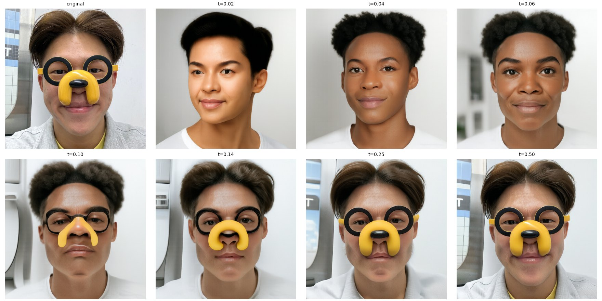
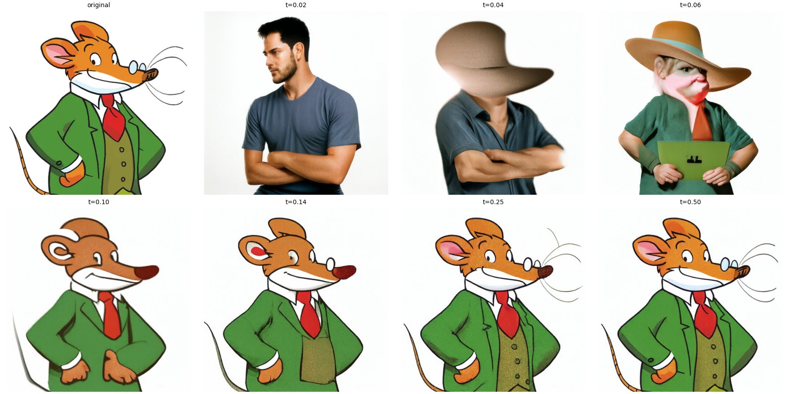
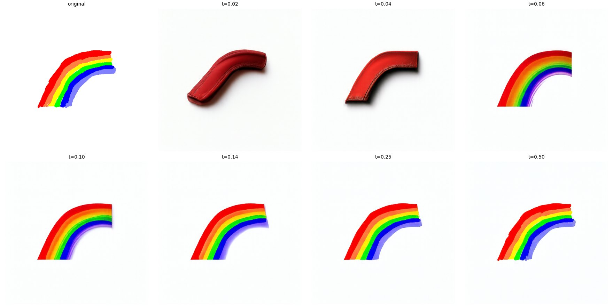
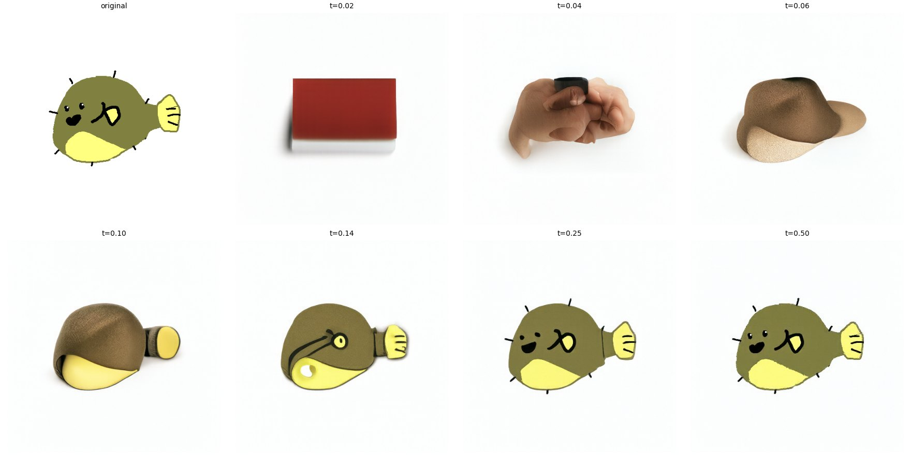
The trend is the same everywhere: at tstart ≤ 0.06 the output ignores the input and just follows the prompt, at 0.10–0.14 you get a blend of the two (this is where the interesting hybrids appear, such as a cat-human creature (or monster)), and from 0.25 up the input is mostly preserved with small stylistic changes.
3.2 Text-conditioned edits
Same procedure with an explicit text prompt on the same inputs, so the same photo can be steered somewhere specific.
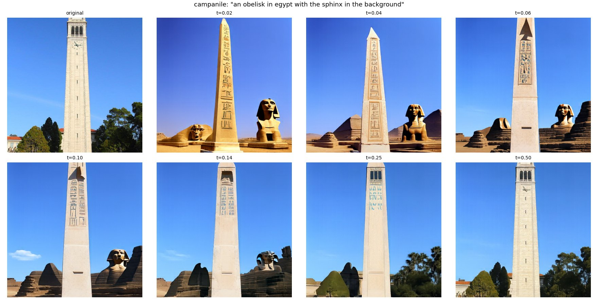
start = 0.25 only hieroglyph-like marks hint at the prompt" loading="lazy" class="w-full h-auto">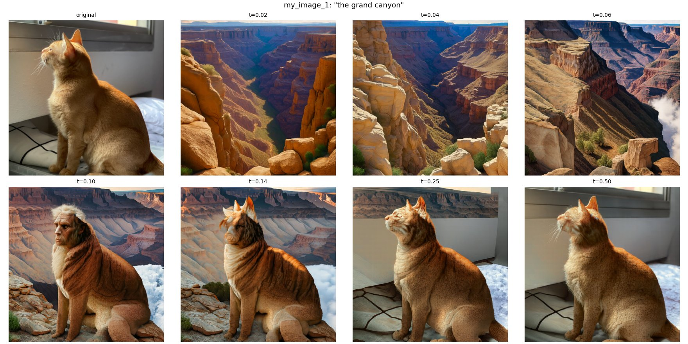
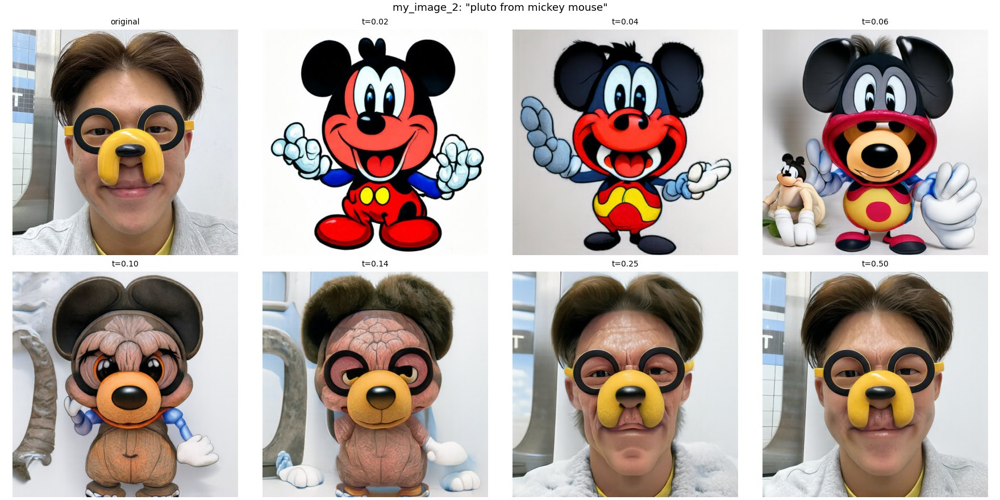
3.3 Visual anagrams
A visual anagram is an image that reads as one thing upright and another when rotated 180°. At each step I compute the CFG velocity for prompt A on x, and for prompt B on the flipped image, rotate that velocity back, and average: v = (v1 + F(v2)) / 2. The rotation must be undone before averaging, otherwise the two velocities live in different frames. Sampling starts from pure noise (t = 0).
Code: visual anagrams
def visual_anagrams(noise, condition_a, condition_b, predict_velocity, w=7, step_size=0.02):
def velocity(x, t):
v1 = cfg_velocity(x, t, condition_a, w, predict_velocity)
v2 = rotate180(cfg_velocity(rotate180(x), t, condition_b, w, predict_velocity))
return (v1 + v2) / 2
x, _ = euler_sample(noise, 0, step_size, velocity)
return x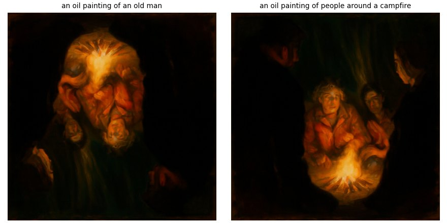
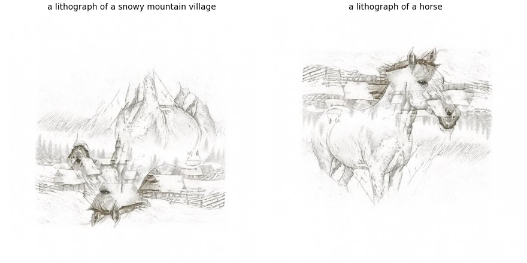
In the first, the upright view is an old man whose chin and neck, flipped, become the group around the campfire. In the second, the upright view is a snowy village with the horse’s head hidden among the roofs. The second is the more convincing one because the flip reuses the same strokes (the mountain’s peaks become the horse’s body).
3.4 Hybrid images
The same trick, with frequencies instead of rotations: take the low frequencies of one prompt’s velocity (Gaussian low-pass, kernel 265, σ = 16 at 512×512) and the high frequencies of another: v = lowpass(va) + vb − lowpass(vb). Prompt A is what you see from far away and prompt B what you see up close. No flipping is involved here.
Code: hybrid images
def make_hybrids(noise, condition_a, condition_b, predict_velocity, w=7, step_size=0.02):
def velocity(x, t):
v_a = cfg_velocity(x, t, condition_a, w, predict_velocity)
v_b = cfg_velocity(x, t, condition_b, w, predict_velocity)
return lowpass(v_a) + v_b - lowpass(v_b)
x, _ = euler_sample(noise, 0, step_size, velocity)
return xPart B: Flow Matching from Scratch
Part B trains everything from scratch on MNIST (images in [0, 1]) in PyTorch: first a single-step denoiser, then time-conditioned flow matching, then class-conditioned flow matching with classifier-free guidance.
1. Single-step denoising UNet
Architecture. A UNet built from a few operators: Conv (3×3, keeps resolution), DownConv (stride 2 halves it), UpConv (transposed conv doubles it), Flatten (7×7 average pool to 1×1) and Unflatten. The encoder uses D channels at 28×28 and 14×14, then 2D at 7×7 and a 1×1 bottleneck; the decoder mirrors it, concatenating the skip connections along the channel axis, so the first decoder block sees 4D channels (2D from the bottleneck path plus 2D from the skip) and the later ones see 2D. A final conv head maps back to one channel. Skip connections give the decoder the fine detail the bottleneck threw away.
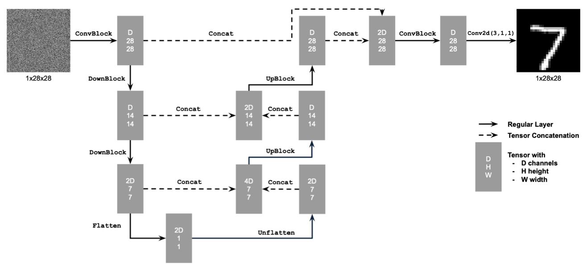
Code: operators and UNet
class UpConv(nn.Module):
def __init__(self, in_channels, out_channels):
super().__init__()
self.net = nn.Sequential(
nn.ConvTranspose2d(in_channels, out_channels, kernel_size=4, stride=2, padding=1),
nn.BatchNorm2d(out_channels), nn.GELU())
def forward(self, x): return self.net(x)
# TimeConditionalUNet.forward (D channels, 28x28 input)
t1 = self.fc1_t(t).view(-1, 2 * D, 1, 1)
t2 = self.fc2_t(t).view(-1, D, 1, 1)
x0 = self.conv_in(x) # D, 28x28
x1 = self.down1(x0) # D, 14x14
x2 = self.down2(x1) # 2D, 7x7
u = self.unflatten(self.flatten(x2)) # 2D, 7x7 (from a 1x1 bottleneck)
u = u * t1 # time modulation
u = self.up1(torch.cat([u, x2], dim=1)) # 4D -> D, 14x14
u = u * t2
u = self.up2(torch.cat([u, x1], dim=1)) # 2D -> D, 28x28
u = self.conv_out(torch.cat([u, x0], dim=1))
return self.head(u)Noising. The training pairs are made with z = x + σε. Each row is one digit; left to right is σ = 0.0, 0.2, 0.4, 0.5, 0.6, 0.8, 1.0. By σ = 0.5 the digit is still recognisable to a person; at σ = 1 it is barely so.
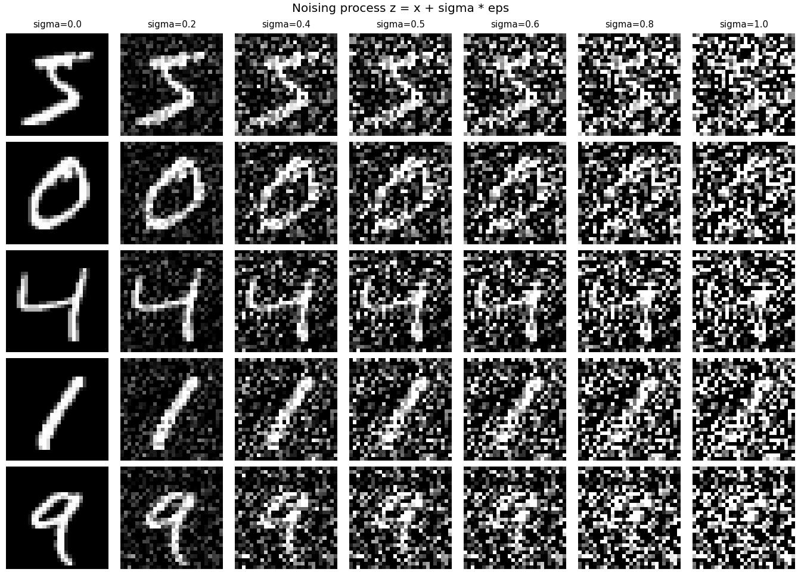
1.2 Training the denoiser at σ = 0.5
I train with an L2 loss on the clean target, batch size 256, Adam lr 1e-4, D = 128, 5 epochs, adding fresh noise to every batch. After one epoch the denoiser already removes most of the noise; after five epochs the digits are crisp and slightly smoothed (a few stroke endings, e.g. the “5” and “4” tails, are blurred).
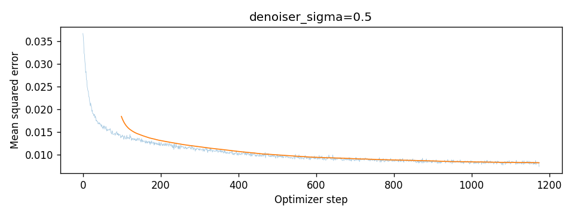
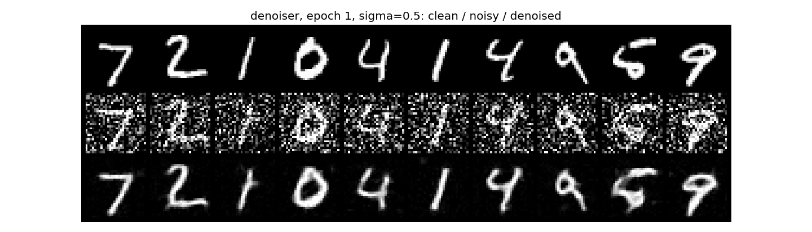
Out-of-distribution noise levels
The denoiser was trained only at σ = 0.5. Testing it on other noise levels (rows alternate noisy / denoised, columns σ = 0, 0.2, 0.4, 0.5, 0.6, 0.8, 1.0): it does fine for σ ≤ 0.6 and even cleans up lower noise levels, but at σ = 0.8 and 1.0 it starts to hallucinate strokes, e.g. the “1” turns into a “7”. It never saw noise this strong, so it falls back on the kind of digit it expects.
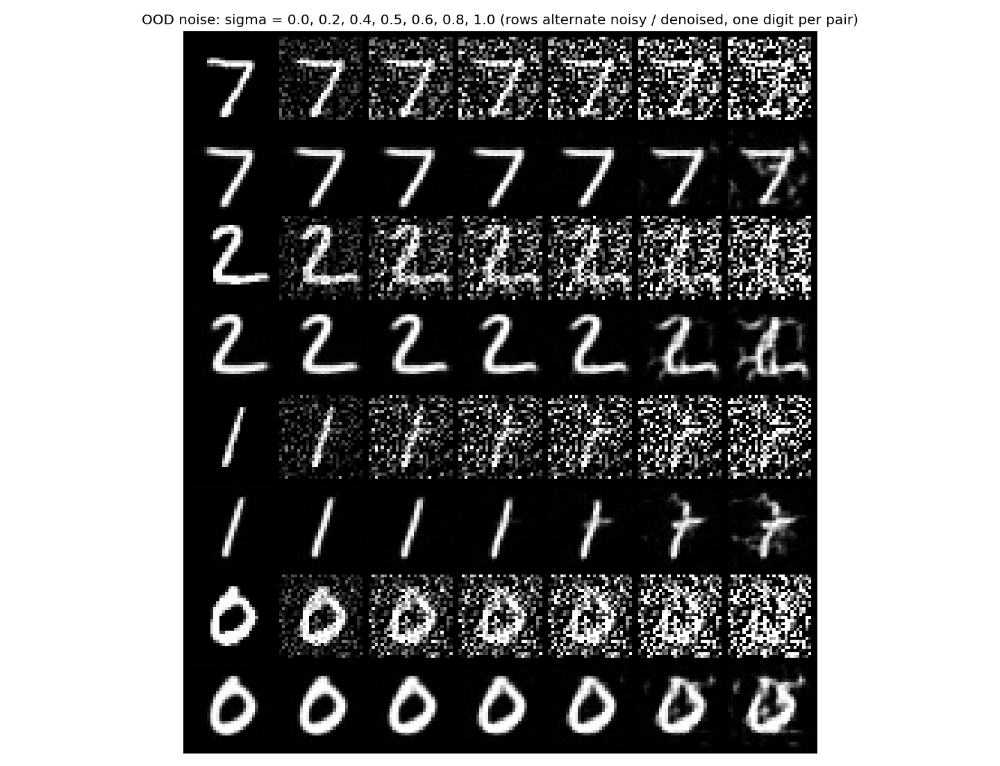
1.2.3 Denoising pure noise
Now I train the same model to map pure noise to a clean digit with an L2 loss. The output is the same blurry blob for every input, which is the mean of the training digits. With an L2 loss the optimal prediction for a given input is the average of all targets that could correspond to it, and since pure noise carries no information about which digit it was, that is the mean image of the training set. This is why one-step denoising cannot be used for generation, and it motivates iterating along a flow.
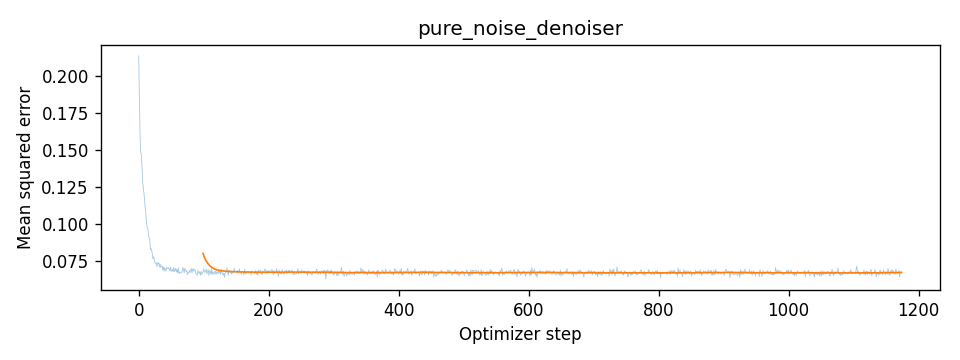
2. Time-conditioned flow matching
A single step cannot go from noise to a digit, so I train a UNet to predict the velocity along the line from noise x0 to a clean image x1: for xt = (1 − t)x0 + t x1 the target is x1 − x0. The scalar t is injected through two FCBlocks whose outputs multiply the feature maps (after the unflatten and after the first up block). Training draws t uniformly from [0, 1] for each image; sampling runs T = 50 Euler steps. Settings: D = 64, batch 64, Adam lr 1e-2 with an exponential decay (gamma = 0.11/10 stepped each epoch), 10 epochs.
Code: time-conditioned loss and sampler
def time_fm_forward(unet, x_1, num_ts):
N = x_1.shape[0]
x_0 = torch.randn_like(x_1) # pure noise
t = torch.rand(N, device=x_1.device, dtype=x_1.dtype) # one random time per image
t_ = t.view(N, 1, 1, 1)
x_t = (1 - t_) * x_0 + t_ * x_1
return F.mse_loss(unet(x_t, t), x_1 - x_0)
@torch.inference_mode()
def time_fm_sample(unet, img_wh, num_ts, seed=0, num_samples=40):
x = torch.randn(num_samples, unet.in_channels, *img_wh, generator=g) # x_0 ~ N(0, I)
dt = 1.0 / num_ts
for i in range(num_ts):
t = torch.full((num_samples,), i / num_ts)
x = x + dt * unet(x, t) # Euler step along the flow
return x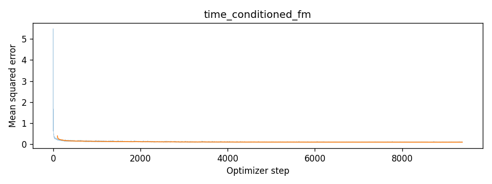
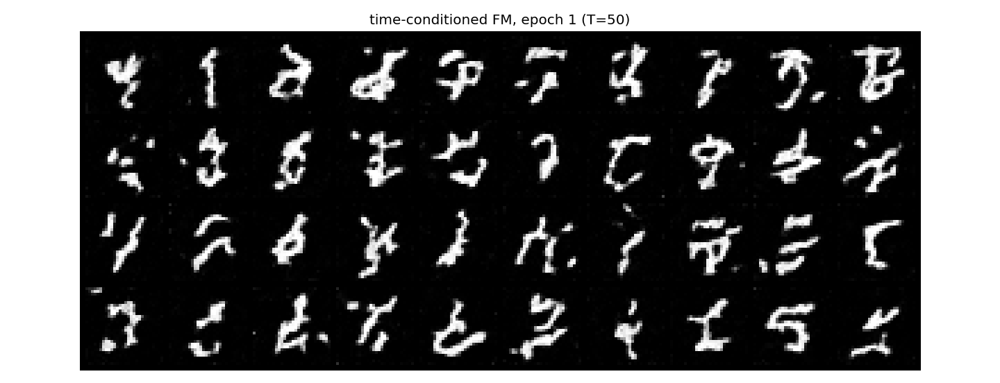
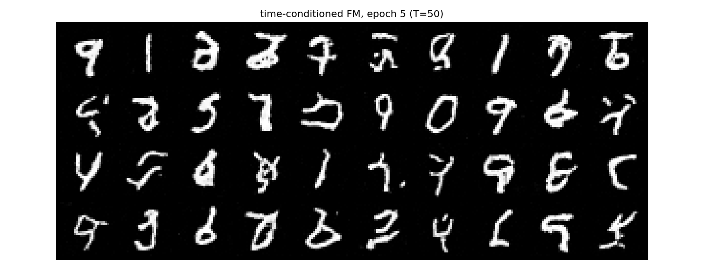
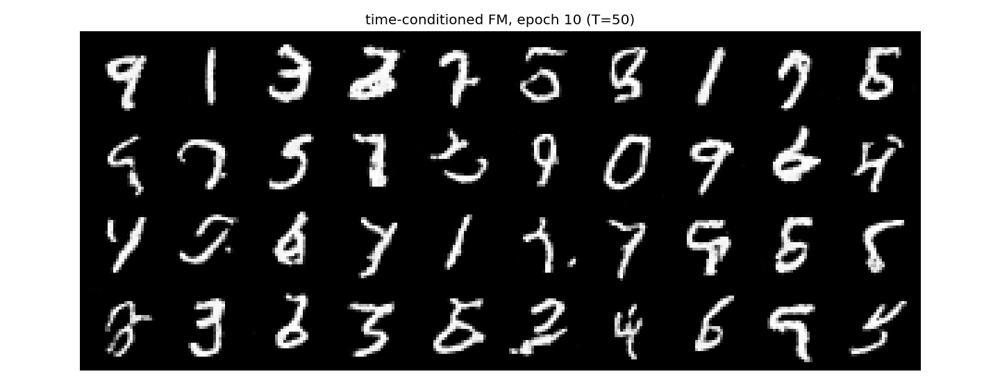
After one epoch the samples are squiggles with digit-like strokes; by epoch 5 most are recognisable; at epoch 10 many are clear digits, though some are still malformed, and nothing tells the model which digit to draw, so the classes are random.
3. Class-conditioned flow matching with classifier-free guidance
To control which digit comes out, the UNet also takes the class as a one-hot vector. Class and time each go through an FCBlock, and the features are modulated as c · features + t at the same two places; with probability 10% the one-hot vector is zeroed so the same network learns the unconditional velocity too. At sampling time I use u = uuncond + γ(ucond − uuncond) with γ = 5 and 300 Euler steps. Otherwise the same settings: D = 64, batch 64, Adam lr 1e-2 decaying exponentially to 1e-3 over 10 epochs. Each row of a sample grid is digits 0–9.
Code: class-conditioned loss (with conditioning dropout) and guided sampler
def class_fm_forward(unet, x_1, c, p_uncond, num_ts):
N = x_1.shape[0]
x_0 = torch.randn_like(x_1)
t = torch.rand(N, device=x_1.device, dtype=x_1.dtype)
t_ = t.view(N, 1, 1, 1)
x_t = (1 - t_) * x_0 + t_ * x_1
mask = (torch.rand(N, device=x_1.device) >= p_uncond).to(x_1.dtype) # 1 = keep class, 0 = drop it
return F.mse_loss(unet(x_t, c, t, mask), x_1 - x_0)
# inside class_fm_sample, every step:
u_uncond = unet(x, c, t, drop) # drop = zeros: class masked out
u_cond = unet(x, c, t, keep) # keep = ones
u = u_uncond + guidance_scale * (u_cond - u_uncond)
x = x + dt * u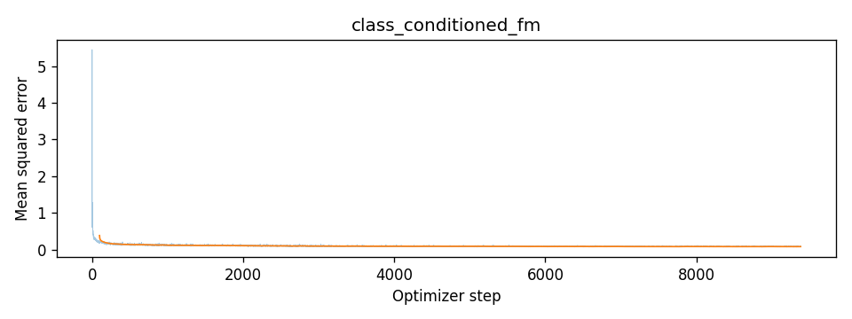
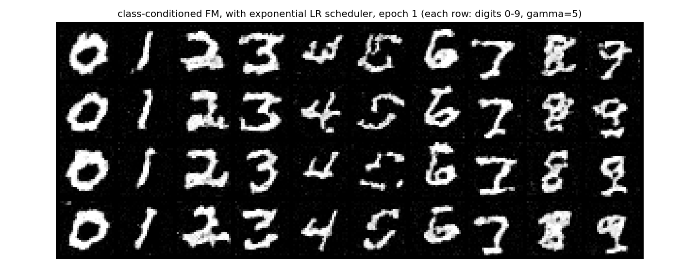
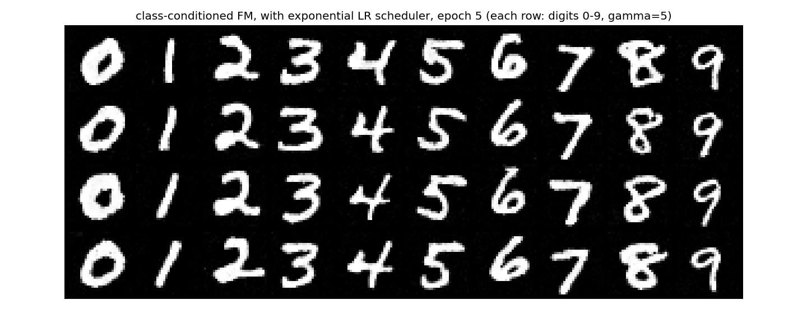
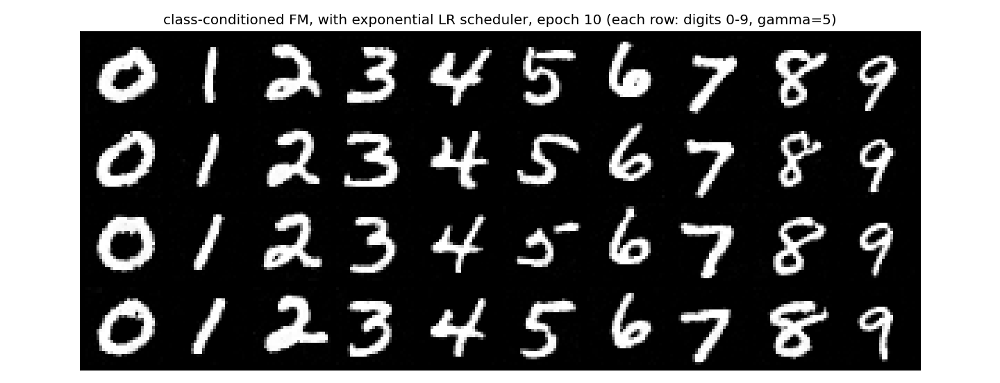
Guidance gives the right digit in every column from epoch 1 on, but the early digits are noisy and deformed (the 4, 5, 8, 9 are the worst). By epoch 10 every row is clean and varied: the four samples per class differ in slant, thickness and style.
Removing the learning-rate scheduler
The scheduler multiplies the lr by 0.11/10 each epoch so it ends 10× lower. To remove it while keeping training stable, I use a constant lr of 1e-3, the value the scheduled run decays to by the end, instead of the starting 1e-2 (without any decay, such a high rate would likely keep the loss noisy), and change nothing else.
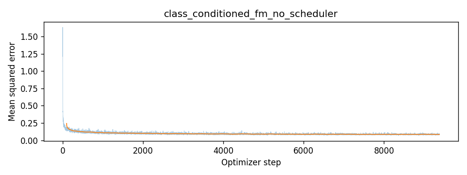
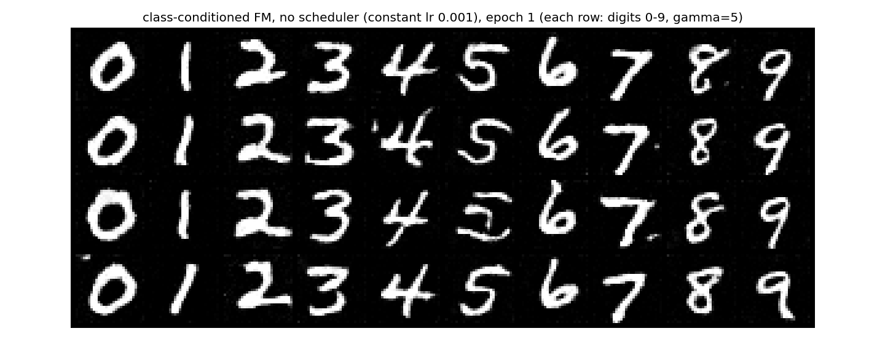
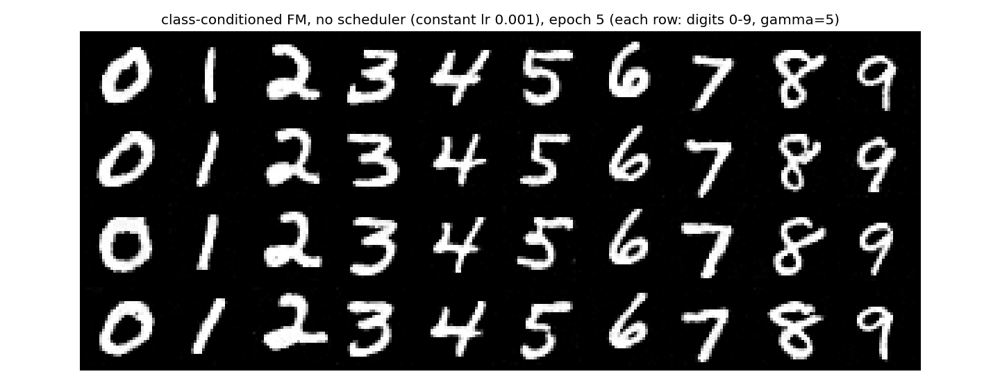
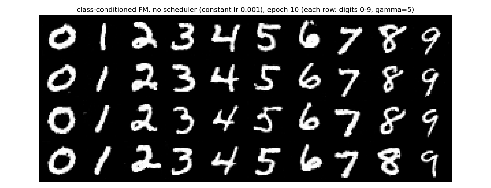
The constant-lr model reaches samples of similar quality, and the loss curve is flat after the first few hundred steps. The scheduled model’s final samples are, to my eye, only marginally cleaner (slightly less speckle in the background), so for this small problem the scheduler is a polish rather than a necessity.
The most important thing I learned
Generation as integrating a velocity field: one jump from noise gives an average (the blurry mean digit in Part B, the smooth cat in Part A), and many small steps along a learned flow give a sample. Guidance, editing, anagrams and hybrids are then all just different ways of combining or reshaping the velocity at each step.